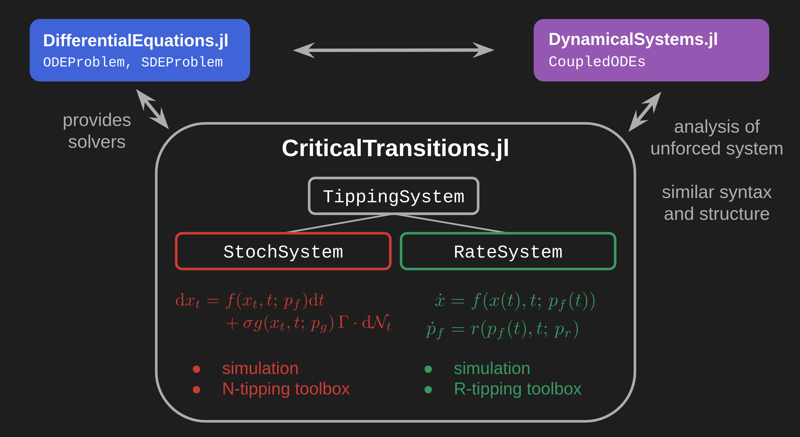

CriticalTransitions.jl
A Julia package for the numerical investigation of noise- and rate-induced transitions in dynamical systems.
Building on DynamicalSystems.jl and DifferentialEquations.jl, this package aims to provide a toolbox for dynamical systems under time-dependent forcing, with a focus on tipping phenomena and metastability.
This version (v0.2) is now compatible with DynamicalSystems v3.

- Stability analysis: Fixed points, linear stability, basins of attraction, edge tracking
- Stochastic simulation: Gaussian noise, uncorrelated and correlated, additive and multiplicative
- Transition path sampling: Ensemble sampling by direct simulation and Pathspace Langevin MCMC
- Large deviation theory: Action functionals and minimization algorithms (MAM, gMAM)
- Rare event simulation: importance sampling, AMS
- Quasipotentials: Ordered line integral method (OLIM)
- Rate-induced tipping tools
- ...?
Developers: Reyk Börner, Ryan Deeley, Raphael Römer and Orjan Ameye
Thanks to Jeroen Wouters, Calvin Nesbitt, Tobias Grafke, George Datseris and Oliver Mehling
This work is part of the CriticalEarth project.